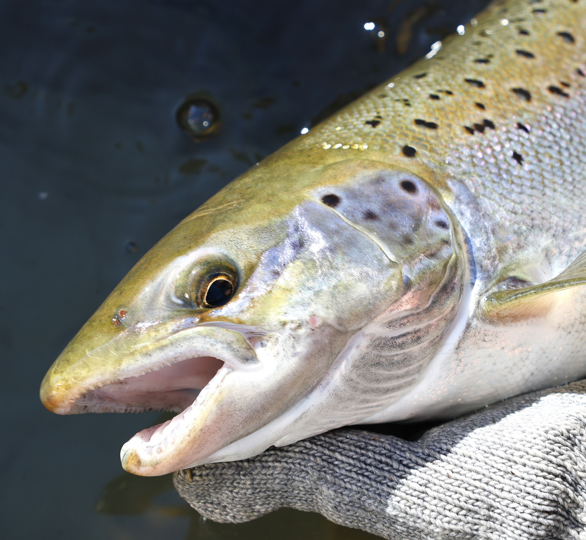

Lake Ontario Atlantic Salmon
Atlantic salmon are Lake Ontario's only native species of salmon. They are culturally significant to the many Indigenous communities in the region. The lake is thought to have once held the world's largest population of freshwater Atlantic salmon. This population declined rapidly after European colonization, and by the late 1800s, they were extirpated (locally extinct) from Lake Ontario. Restoration efforts currently aim to create a recreational fishery and increase the possibility of having a population of Atlantic salmon that can reproduce on their own in the wild.
Fishing for Atlantic Salmon
In Lake Ontario, Atlantic salmon can be caught in the lake or tributaries. The NYS Department of Environmental Conservation (NYSDEC) currently stocks Atlantic Salmon in 4 tributaries of Lake Ontario: Sandy Creek (Jefferson County), Salmon River (Oswego County), Sandy Creek (Monroe County), and Oak Orchard Creek (Orleans County). Anglers have had success targeting Atlantics in these tributaries in the fall and early winter. Catch rates are on the rise, so your odds of catching a Lake Ontario Atlantic Salmon have never been better in recent years. Click here to see the DEC's Atlantic Salmon Management Plan, and click here to book a charter to try catching one today!
Share Your Catch – Get a Sticker
Participate in NYSDEC’s New York Angler Achievement Awards Program. If you catch a Lake Ontario Atlantic Salmon that meets the minimum size (categories for adult and youth anglers), take a picture of your catch, fill out a quick form, submit and receive a sticker. More information here.
Identify Your Catch!
For those unfamiliar with Atlantic salmon, they can sometimes be difficult to identify. Use the resources below to help you learn to tell apart the many species of trout and salmon in Lake Ontario. You may also click here for a guide to identifying salmon against brook trout, or here for a compiled identification guide of various Great Lakes specimen.